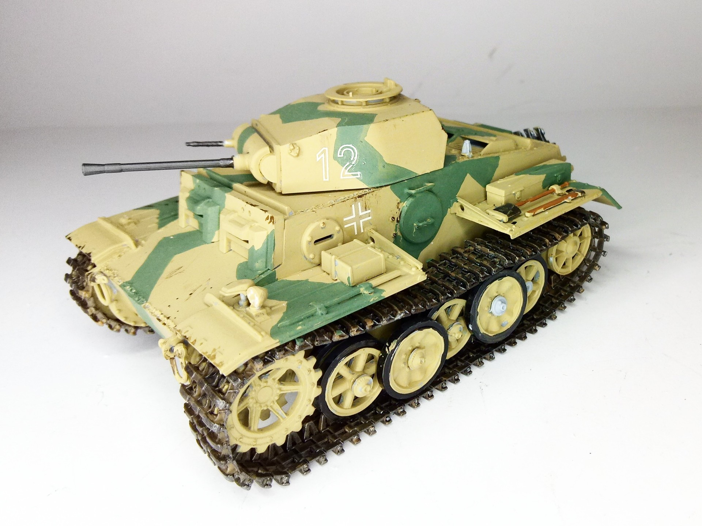
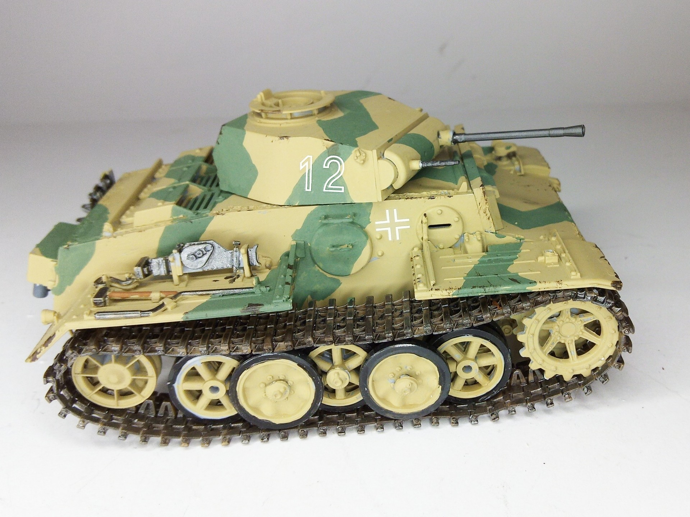
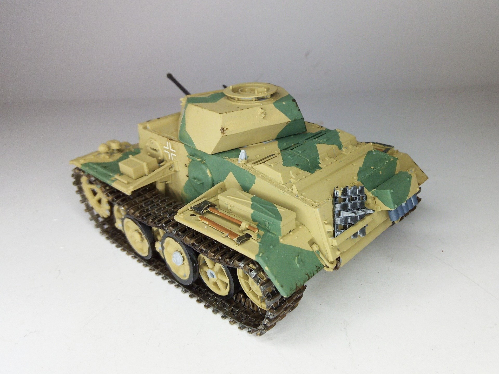

Mezzi militari · scale model archive
Panzerkampfwagen II Ausf.J
Panzerkampfwagen II Ausf.J — Kit: Ark, Scale: 1/35. Heavily armored reconnaissance tank, fitted with working links tracks, I love them #1/35 #Ark #PzII

Photo gallery


English description
Heavily armored reconnaissance tank, fitted with working links tracks, I love them
#1/35 #Ark #PzII
Descrizione italiana
Carro da ricognizione pesantemente corazzato, con cingoli a maglie funzionanti: li adoro.